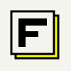
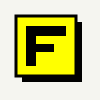
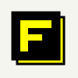
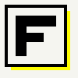
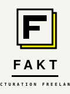
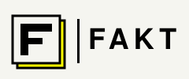

 1A Original Référence du chat précédent. Carte papier + ombre jaune offset 6px. Lecture douce, signature brutaliste.
 1B Yellow Fill Carte jaune + ombre noire pleine. Plus punchy, le jaune devient le héros — match parfait avec l'icône macOS / dock.
 1C Inverse Dark Carte noire + F jaune. Version dark mode native, parfaite pour menubar Windows / titre app.
 1D Tight Mark F gros, frame épaisse 4px, espacement réduit. Optimisé favicon 16/32px et icône installeur — lisible à toutes tailles.
 1E Lockup Vertical Mark + wordmark FAKT + tagline mono. Pour splash screen, README, page GitHub.
 1F Lockup Horizontal Mark + barre + wordmark FAKT. Pour bandeau site web, signature email, header app.